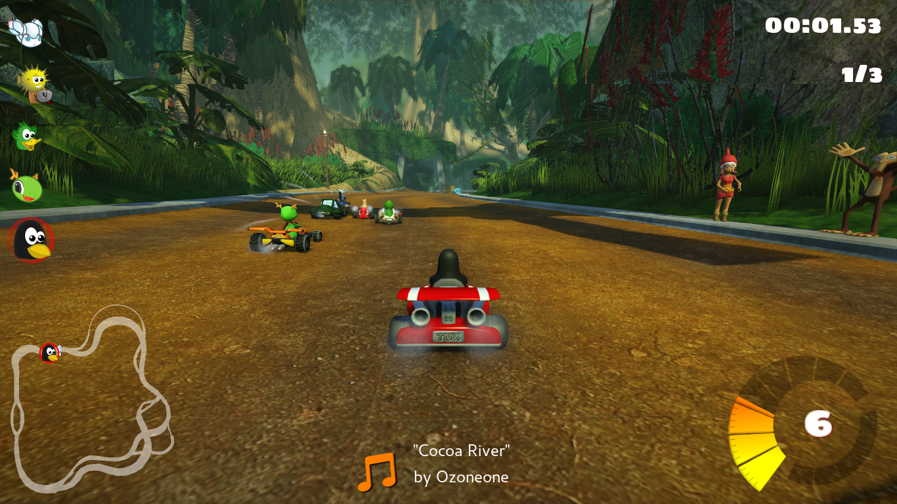

低遅延プレビュー
キャプチャーボードの映像を低遅延表示。ゲーム画面を見ながら操作したいときの確認用モニターとして使えます。
CapturePlayは、キャプチャーボードのゲーム映像を手軽に表示・録画・確認するWindowsアプリです。低遅延で見ながら、映像だけを別ウィンドウへ分離できます。
配信レイアウトを組む総合配信ソフトではありません。
キャプチャーボードを「見る・録る・確認する」操作を、シンプルにまとめることがCapturePlayの役割です。

ゲーム機や別PCから来た映像を、確認したいときにすぐ開く。必要なら録る。画面だけ分ける。CapturePlayは、その日常的な操作に絞っています。
キャプチャーボードの映像を低遅延表示。ゲーム画面を見ながら操作したいときの確認用モニターとして使えます。
操作ボタンはメイン画面に残し、ゲーム映像だけを独立ウィンドウへ。Discord共有や別モニターで扱いやすくなります。
見ている映像をそのまま録画。プレイ記録や動作確認を、別の大きな配信環境を組まずに残せます。
気になった瞬間をすぐ撮影。ゲーム画面や接続確認の記録をPNGで保存できます。
ゲーム音声や利用できる音声ソースを確認し、再生・録画のバランスを調整。4CHミキサーにも対応します。
入力FPSや表示処理、転送経路などを確認し、環境に合わせた改善ポイントをアプリから見つけやすくします。
HDMIで入ってきた映像をCapturePlayで開き、見る・録る・撮る・音を確認する。必要なら映像ウィンドウだけを分離して、別のアプリへ見せます。
シーン合成や配信レイアウトを作る総合配信ソフトではありません。CapturePlayはキャプチャーボード映像の表示・記録・状態確認を軽く扱うためのアプリです。
入力、画質、低遅延表示、録画品質を選び、表示中は「画面分離」「録画」「撮影」「全画面」「音量ミキサー」へすぐ移動できます。
映像を大きく見たいときは「画面分離」。操作画面を小さく残し、映像だけを独立して扱えます。